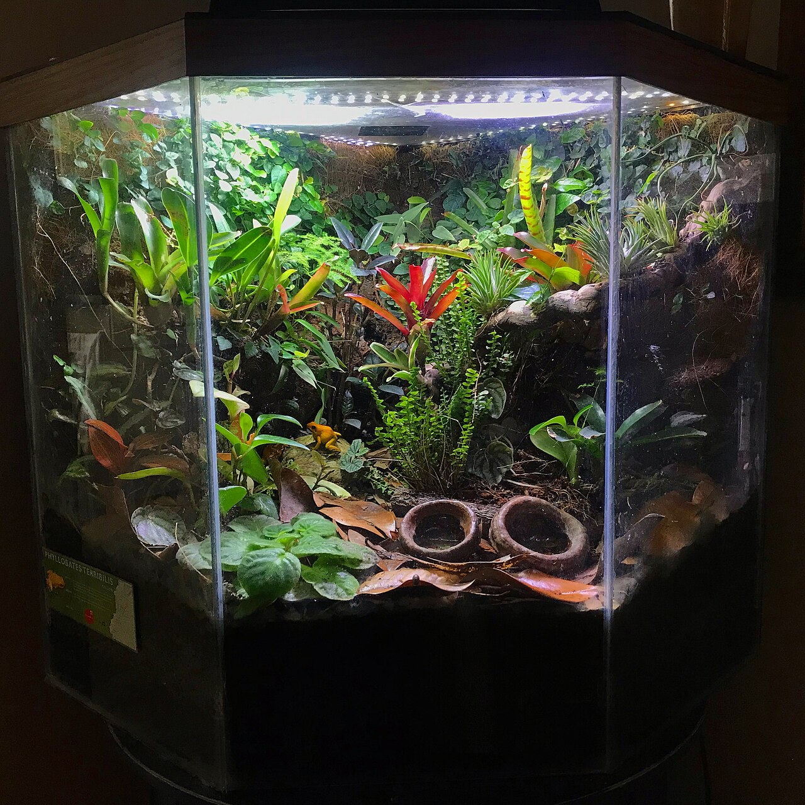

Habitat Setup
Planning a Suitable Habitat
How to think about enclosure size, shape, ventilation and layout before choosing any equipment.
Read the guideHide the guide
A good enclosure is designed around the adult animal and how it naturally lives — not around what looks attractive or fits a shelf.
- Size and orientation. Tree-dwelling species generally need height; ground-dwelling and burrowing species need floor space and depth. Plan for adult size, not the size at purchase.
- Ventilation. Glass, mesh and solid-sided enclosures hold heat and humidity very differently. Match the enclosure type to the conditions the species needs.
- Zones. Lay out warmer and cooler areas, shelter, water and open space so the animal can choose where to be.
- Security. Use secure, escape-proof lids and doors, and route cables and fittings safely out of reach.
- Test first. Set up and run the enclosure before the animal arrives, so you can confirm conditions are stable.